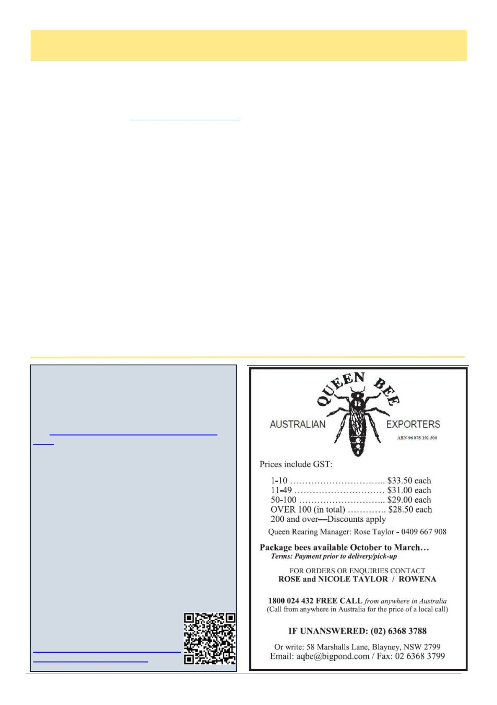

May 2026
13
Raft Of New Bee Book Releases
AgriFutures Honeybee & Pollination Panel
Commercial Honey Producers and Researchers
Wanted
Applications now open for AgriFutures Honey Bee &
Pollination Program Advisory Panel.
The AgriFutures Honey Bee & Pollination Pro-
gram is seeking to appoint four new members to the
Honey Bee & Pollination Advisory Panel.
These positions are open to commercial honey
producers, commercial pollinators and researchers
working in honey bee or related fields, who are not
currently engaged in AgriFutures Honey Bee &
Pollination Program-funded research.
Applicants should demonstrate:
• industry experience and a desire to contribute to the
industry
• understanding of industry research priorities
• strategic leadership and governance capability
ability to contribute effectively to the Advisory Panel.
Applicants with experience in research and
development management, extension or training are
also encouraged to apply. Governance and financial
management experience will be highly regarded.
Applications close 12pm (AEST)
on 20 July 2026.
Apply for the AgriFutures Honey Bee
By John Kennedy
Northern Bee Books, the UK based publisher with a
list of over 400 titles, quite rightly claims to be the
world‟s largest source of English language beekeeping
books. Their website at www.northernbeebooks.co.uk
is professionally run and known to respond promptly to
local orders with dispatch and postage. Their UK prices
are quoted in pounds Sterling, so an Australian dollar
conversion plus postage will be given on your enquiry.
Here are three new titles which I judge to be of prin-
cipal interest to Australian beekeepers keen to advance
their knowledge of aspects of beekeeping interest.
Local Queens are Best
- with the subtitle of how to simply rear your own.
This is the first edition of a paperback of 72 pages
and is authored by Bruce Henderson Smith.
The prelude to the book notes, “say “queen rearing”
to most beekeepers and they will usually run a mile.
“This book aims to demystify simple queen rearing,
“It sets out to explain a method of queen rearing on a
small scale, which can be used by any beekeeper with a
few years of experience and a small number of hives”.
It is richly illustrated with the author‟s photographs
and his first hand commentary of what to look for, and
the message to just trust the nurse bees to know their
job.
It is highly recommended for any beekeeper, even
with modest experience, who wants to improve their
stock. It is available for 18 pounds Sterling.
Natural Medicine from Honey Bees – Apitherapy
This is a translation in English, of an original in
Dutch by Jacob Kaal, which dates to 1991, andcontains
an impressive international bibliography and a system-
atic detailed record of known and potential medicinal
properties of bee products - Propolis, Bee Venom, Roy-
al Jelly, Pollen, Honey and Apilarnil.
The publisher says it‟s a practical approach and pio-
neering research underpins this work, “making it a very
valuable source of information for beekeepers, medical
practitioners, pharmacists and patients seeking alterna-
tive medicine”.
It comes as a softback of 100 pages and is listed at
49 pounds sterling.
Swarm Control
A softback of 38 pages, first edition, written by Rich-
ard Ball.
It is described as an excellent little book designed to
help beginners to understand the processes that lead to
this natural event in the colony‟s lifecycle, and to learn
that with new queens and plentiful space in the hive this
impulse may not occur.
The author gives good summaries of the main tried
and tested methods – i.e Demaree, Pagden, Heddon and
Snelgrove and their various adaptions, also showing
how some of these can help in reducing the varroa load
in a colony.
It is priced at 24 pounds Sterling.